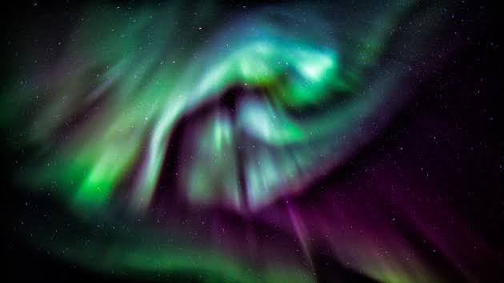
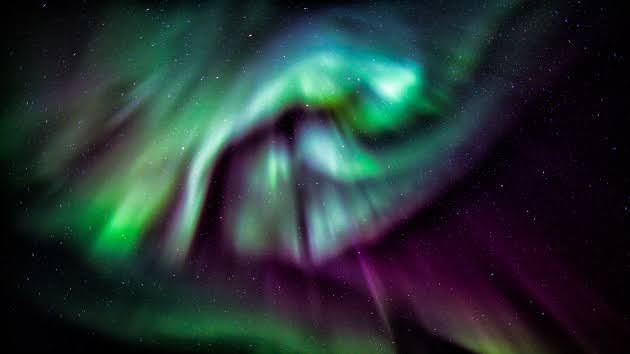

Overview
In May 2024, there was a significant geomagnetic storm that affected various regions of the Earth. Such storms can be caused by solar flares or coronal mass ejections (CMEs) that send charged particles towards our planet. This particular storm was notable for its intensity, leading to spectacular auroras in areas that don’t usually see them, as well as disruptions in satellite communications and navigation systems. People in high-latitude regions reported vibrant displays of the Northern and Southern Lights, while some airlines rerouted flights to avoid increased radiation exposure at higher altitudes. Power grids in some areas were also put on high alert to prevent overloads due to fluctuations in the geomagnetic field.
NASA Data
Below is a photo showing A coronal aurora appeared over southwestern British Columbia on May 10, 2024..
 

Visual Representations
Watch the video below to see a visual representation of the geomagnetic storms of May 2024.
Impacts on Earth
The geomagnetic storms in May 2024 disrupted communication systems and satellites, affected GPS signals, and produced stunning auroras in regions much farther south than usual.
From May 3 through May 9, 2024, NASA’s Solar Dynamics Observatory observed 82 notable solar flares. The flares came mainly from two active regions on the Sun called AR 13663 and AR 13664. This video highlights all flares classified at M5 or higher with nine categorized as X-class solar flares. NASA’s Goddard Space Flight Center.The first signs of the solar storm started late on May 7 with two strong solar flares. From May 7 – 11, multiple strong solar flares and at least seven CMEs stormed toward Earth. Eight of the flares in this period were the most powerful type, known as X-class, with the strongest peaking with a rating of X5.8. (Since then, the same solar region has released many more large flares, including an X8.7 flare — the most powerful flare seen this solar cycle — on May 14.)
-
The geomagnetic storm in May 2024 was driven primarily by a powerful coronal mass ejection (CME)
from the Sun, which occurred a few days prior. Here are some more details about the event:
- Causes Solar Activity: The storm was triggered by a large solar flare that released a CME, sending a stream of charged particles towards Earth. This solar event was observed by space weather monitoring satellites, allowing scientists to predict its arrival.
- Effects
- Auroras: The storm produced stunning auroras visible much farther south than usual, with reports of sightings in places like the northern United States and parts of Europe.
- Communications: Many users experienced disruptions in radio communications, particularly in high-frequency bands, which are often affected by geomagnetic activity.
- Satellites: Satellites in orbit experienced increased drag due to the expanded atmosphere caused by the storm, which can affect their orbits and operational capabilities.
- Power Grids: Utilities in regions prone to geomagnetic storms monitored their systems closely to prevent outages and protect infrastructure. Some operators implemented precautionary measures.
- Response and Monitoring
- Space Weather Agencies: Organizations like NOAA's Space Weather Prediction Center (SWPC) and the European Space Agency closely tracked the storm, providing real-time updates and forecasts.
- Public Awareness: Increased media coverage and social media alerts helped inform the public about potential disruptions and the chance to see auroras.
- Future Implications
- Geomagnetic storms can serve as a reminder of the Sun's influence on Earth. Scientists are continuously improving their ability to predict such events, which is crucial for minimizing their impacts on technology and infrastructure. If you have more specific aspects you’d like to explore—like the science behind geomagnetic storms or their long-term effects—let me know!